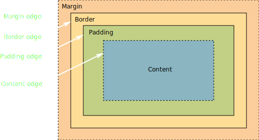
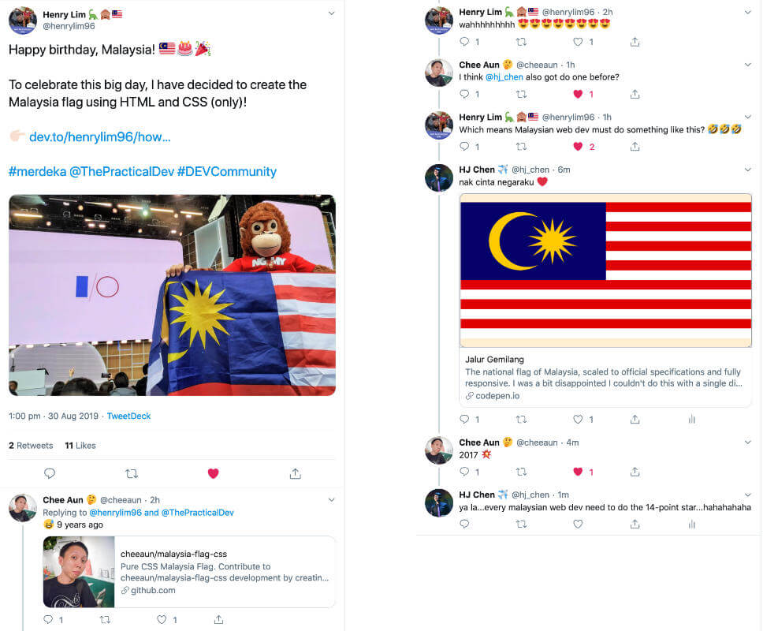

Creating art with CSS


🥑 Developer Advocate 🥑

What is Art?
Art
The application of skill to the production of the beautiful by imitation or design, or an occupation in which skill is so employed, as in painting and sculpture; one of the fine arts; as, he prefers art to literature.
—Webster's 1913
Basic shapes with CSS
width&heightborder-radiusborder
Rectangles
.rectangle {
width: 60vmin;
height: 30vmin;
background: #bababa;
}The box model
The border-radius property

Circles
.circle {
width: 30vmin;
height: 30vmin;
background: #bababa;
border-radius: 50%; /* This is the key line, right here */
}1-value syntax
border-radius: 1em
2-value syntax
border-radius: 1em 2em
3-value syntax
border-radius: 1em 2em 3em
4-value syntax
border-radius: 1em 2em 3em 4em
Semi-circles
.semicircle-top {
width: 30vmin;
height: 15vmin;
border-radius: 15vmin 15vmin 0 0;
}
.semicircle-left {
height: 30vmin;
width: 15vmin;
border-radius: 15vmin 0 0 15vmin;
}
.semicircle-bottom {
width: 30vmin;
height: 15vmin;
border-radius: 0 0 15vmin 15vmin;
}
.semicircle-right {
height: 30vmin;
width: 15vmin;
border-radius: 0 15vmin 15vmin 0;
}Quarter-circles
.quartercircle-nw {
height: 15vmin;
width: 15vmin;
border-radius: 100% 0 0 0;
}
.quartercircle-ne {
height: 15vmin;
width: 15vmin;
border-radius: 0 100% 0 0;
}
.quartercircle-se {
height: 15vmin;
width: 15vmin;
border-radius: 0 0 100% 0;
}
.quartercircle-sw {
height: 15vmin;
width: 15vmin;
border-radius: 0 0 0 100%;
}Triangles
Transparent is a colour in CSS.

Isosceles Triangles
.triangle-top {
border-right: 15vmin solid transparent;
border-bottom: 15vmin solid #bababa;
border-left: 15vmin solid transparent;
}
.triangle-right {
border-top: 15vmin solid transparent;
border-bottom: 15vmin solid transparent;
border-left: 15vmin solid #bababa;
}
.triangle-bottom {
border-top: 15vmin solid #bababa;
border-right: 15vmin solid transparent;
border-left: 15vmin solid transparent;
}
.triangle-left {
border-top: 15vmin solid transparent;
border-bottom: 15vmin solid transparent;
border-right: 15vmin solid #bababa;
}Right-angled Triangles
Complex shapes with CSS
clip-pathborder-radiustransform
Polygons
.trapezium {
width: 60vmin;
height: 30vmin;
background: #bababa;
clip-path: polygon(33% 0, 67% 0, 100% 100%, 0% 100%);
}
.rabbet {
width: 30vmin;
height: 30vmin;
background: #bababa;
clip-path: polygon(0% 15%, 15% 15%, 15% 0%, 85% 0%, 85% 15%, 100% 15%, 100% 85%, 85% 85%, 85% 100%, 15% 100%, 15% 85%, 0% 85%);
}
.star {
width: 45vmin;
height: 45vmin;
background: #bababa;
clip-path: polygon(50% 0%, 61% 35%, 98% 35%, 68% 57%, 79% 91%, 50% 70%, 21% 91%, 32% 57%, 2% 35%, 39% 35%);
}Irregular shapes
Irregular shapes
div:first-child {
width: 45vmin;
height: 45vmin;
background: $linkColor;
border-radius: 100% 0% 60% 40% / 60% 0% 100% 40%;
}
div:nth-child(2) {
width: 45vmin;
height: 45vmin;
background: $linkColor;
border-radius: 84% 16% 74% 26% / 30% 33% 67% 70%;
}
div:nth-child(3) {
width: 45vmin;
height: 45vmin;
background: $linkColor;
border-radius: 37% 63% 21% 79% / 64% 79% 21% 36%;
}Transforms
Transform functions include, rotate(), scale(), translate() and skew(). Each transform is cumulative and operate from their transform-origin.
Transforms
/* If you need multiple transforms, do this */
.element {
transform: translate(-10px, -20px) scale(2) rotate(45deg)
}/* Do NOT do this */
.element {
transform: translate(-10px, -20px);
transform: scale(2);
transform: rotate(45deg);
}Creating/combining multiple shapes
::before&::after- Positioning
linear-gradient()&radial-gradient()box-shadow
A single div
Pseudo-elements
::before and ::after
.element::before {
content: '';
display: block;
width: 50%;
height: 50%;
}Must have the content property to work
At least have empty quotes
Not visible in the page's source, only in CSS
Positioning
static, relative, absolute, sticky
A CSS heart
Gradients
Can be used in any property that accepts images, e.g. background, list-style-image etc.
linear-gradient( [ <angle> | <side-or-corner> ]?, <color-stop-list> )First argument specifies gradient line, defaults to to-bottom if omitted. Can use angle or keyword.
<color-stop-list> = <color-stop>#{2,}
<color-stop> = <color> <length-percentage>?At least 2 values, no maximum limit. Between 2 colour stops, the line's colour is linearly interpolated between the 2 colours.
For clean change between 2 colours, have 2 colour stops at the same position, i.e. at least 4 <color-stop> values needed.
.element {
background-image: linear-gradient(orange, green)
}.element {
background-image: linear-gradient(orange, orange 50%, green 50%, green)
}Gradients
Box shadow
Multiple box shadows are a thing
box-shadow: [horizontal offset] [vertical offset] [blur radius] [optional spread radius] [color];Make use of the offsets for positioning, and the blur radius for sizing
Text shadow
Similar to box shadows but is added to text instead.
text-shadow: [horizontal offset] [vertical offset] [optional blur radius] [color];Say equilateral quadrilateral really fast 🚀
Putting some of it together
It's Malaysia's 62nd birthday today.
.jalur-gemilang {
width: 15em;
height: 7.5em;
position: relative;
background-image: linear-gradient(
to bottom,
#cc0001 0%, #cc0001 calc(100% / 14),
#fff calc(100% / 14), #fff calc(100% / 14 * 2),
#cc0001 calc(100% / 14 * 2), #cc0001 calc(100% / 14 * 3),
#fff calc(100% / 14 * 3), #fff calc(100% / 14 * 4),
#cc0001 calc(100% / 14 * 4), #cc0001 calc(100% / 14 * 5),
#fff calc(100% / 14 * 5), #fff calc(100% / 14 * 6),
#cc0001 calc(100% / 14 * 6), #cc0001 calc(100% / 14 * 7),
#fff calc(100% / 14 * 7), #fff calc(100% / 14 * 8),
#cc0001 calc(100% / 14 * 8), #cc0001 calc(100% / 14 * 9),
#fff calc(100% / 14 * 9), #fff calc(100% / 14 * 10),
#cc0001 calc(100% / 14 * 10), #cc0001 calc(100% / 14 * 11),
#fff calc(100% / 14 * 11), #fff calc(100% / 14 * 12),
#cc0001 calc(100% / 14 * 12), #cc0001 calc(100% / 14 * 13),
#fff calc(100% / 14 * 13), #fff calc(100%));
}.jalur-gemilang::before {
content: "";
display: block;
height: calc(7.5em / 14 * 8);
width: 7.5em;
background-color: #010066;
position: absolute;
}.jalur-gemilang::after {
content: "";
display: block;
width: calc(7.5em / 14 * 6);
height: calc(7.5em / 14 * 6);
background-color: #ffcc00;
position: absolute;
top: calc(7.5em / 14);
left: calc(7.5em / 14 * (11 / 4));
border-radius: 50%;
}.bulan {
width: calc(7.5em / 14 * (16 / 3));
height: calc(7.5em / 14 * (16 / 3));
background-color: #010066;
position: absolute;
top: calc(7.5em / 14 * (4 / 3));
left: calc(7.5em / 14 * (15 / 4));
border-radius: 50%;
z-index: 2;
}.bintang {
position: absolute;
top: calc(7.5em / 14 * 3);
left: calc(7.5em / 14 * (31 / 4));
z-index: 2;
}.segi {
width: calc(7.5em / 14 * (3.14159 / 7));
height: calc(7.5em / 7);
background: #ffcc00;
position: absolute;
left: calc(7.5em / 14 - ((7.5em / 14 * (3.14159 / 14))) / 2);
}.segi::before {
content: '';
display: block;
border-bottom: calc(7.5em / 14 * (3 / 2)) solid #ffcc00;
border-left: calc(7.5em / 14 * (3.14159 / 14)) solid transparent;
border-right: calc(7.5em / 14 * (3.14159 / 14)) solid transparent;
position: absolute;
top: calc(-7.5em / 14 * (3 / 2));
}.segi::after {
content: '';
display: block;
border-top: calc(7.5em / 14 * (3 / 2)) solid #ffcc00;
border-left: calc(7.5em / 14 * (3.142 / 14)) solid transparent;
border-right: calc(7.5em / 14 * (3.142 / 14)) solid transparent;
position: absolute;
bottom: calc(-7.5em / 14 * (3 / 2));
}.segi:nth-child(2) {
transform: rotate(calc(360deg / 14));
}
.segi:nth-child(3) {
transform: rotate(calc((360deg / 14) * 2);
}
.segi:nth-child(4) {
transform: rotate(calc((360deg / 14) * 3);
}
.segi:nth-child(5) {
transform: rotate(calc((360deg / 14) * 4);
}
.segi:nth-child(6) {
transform: rotate(calc((360deg / 14) * 5);
}
.segi:nth-child(7) {
transform: rotate(calc((360deg / 14) * 6);
}Jalur Gemilang
Happy 62nd birthday, Malaysia!
Cinta negaraku ❤️
A single div Singapore flag
Some inspiration for you…
Useless is not worthless.
—Charlie Gerard
Related links
- MDN web docs
- CSS Backgrounds and Borders Module Level 3
- A Single Div: a CSS drawing project by Lynn Fisher
- Single Div Drawings with CSS
- CSSDay Talk: Illustration with CSS
- The Anatomy of a Pure CSS Heart ❤
- How to Create Malaysia Flag with HTML and CSS 🇲🇾
- Send Help! I’m obsessed with CSS Art!
- This Stunning Image Made With Pure Code Is Like a Mood Ring For Your Browser
Thank you!


Header font is Rakkas by Zeynep Akay
Body font is Vollkorn by Friedrich Althausen